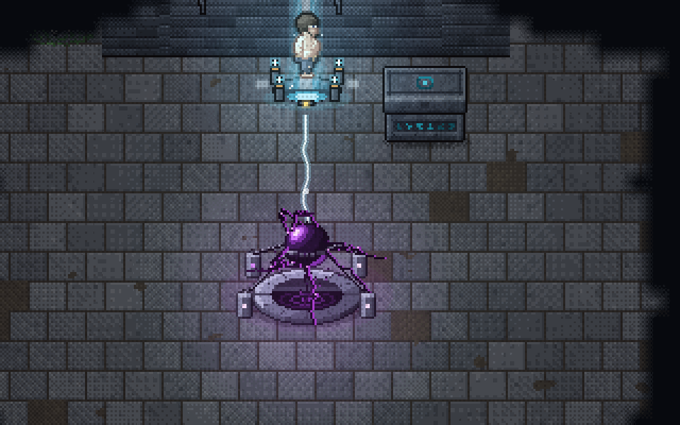
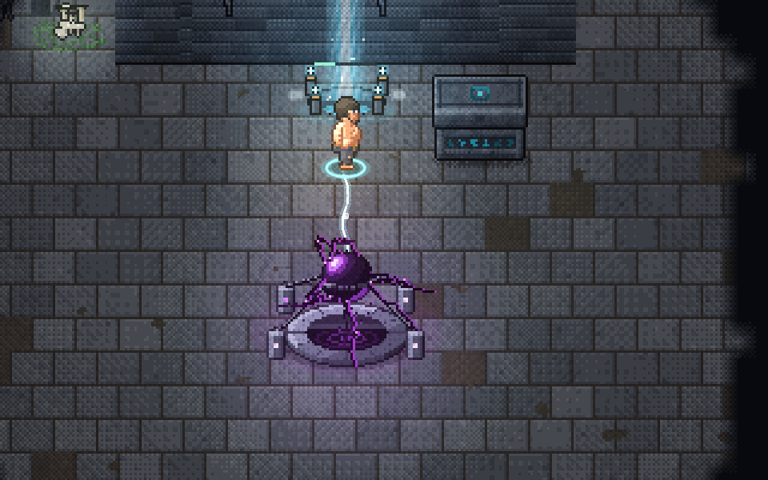
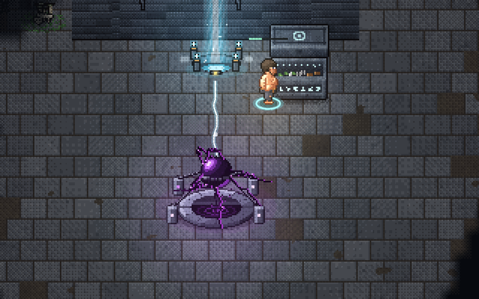
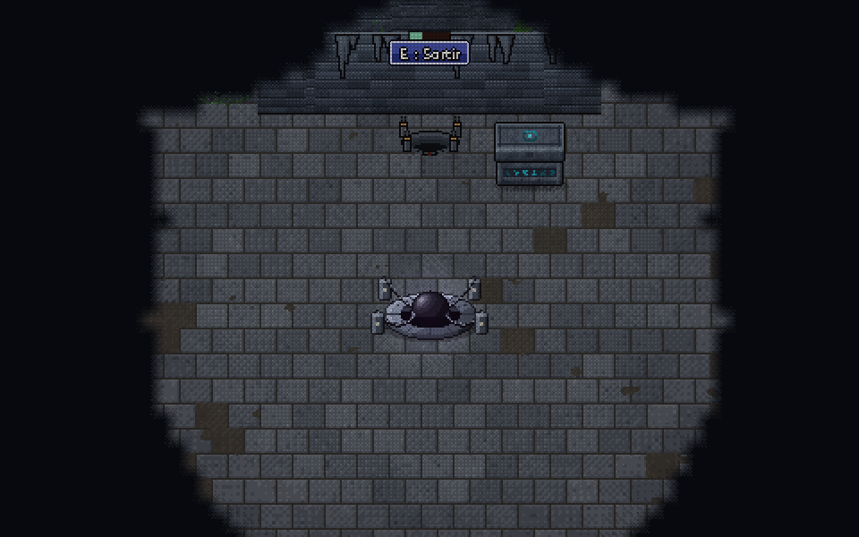

Validée le 2026-11-22 : choix recommandés (A1 B1 D1 E1 F1 G1 H1), C décidé (barres de PV). Touche de l’Établi : W au lieu de X, qui ouvre le grimoire des recherches. L’Ingénieur ne tombe plus du portail : il se réveille dans sa capsule éteinte. L’Ancre s’allume et se recharge seule, puis alimente la capsule. Une fois sorti, il ouvre le Coffre Antique posé juste à côté et y trouve son équipement de départ et un premier plan de mod, « Analyse ». Les fonds sont de vraies captures du jeu. Les jauges, les invites et la bannière sont des maquettes. Les choix ouverts sont en bas, avec ma recommandation.
Les étapes 1 à 3 forment une seule cinématique (barres noires, HUD masqué, commandes coupées), d’environ 12 s. La partie jouable commence à l’étape 4.
L’Ingénieur est dans la capsule, invisible (in_capsule). La capsule est noire, sans invite. L’Ancre est éteinte. Le Coffre Antique est désactivé : ses glyphes sont éteints (rendu V1, section 2). Le carton « Jour 1 » apparaît puis s’efface.
Étincelle violette sur le puits. Au même instant, le Coffre se réactive : l’œil se rallume, puis les glyphes de la face avant de gauche à droite (1,2 s). La jauge de l’Ancre se remplit ensuite de 0 à 100 % en 7,5 s, sans action du joueur. Ce réveil remplace « E : Réactiver l’Ancre » et l’agenouillement.
Le trait d’énergie existant (link, 2,2 s) court au sol de l’Ancre à la capsule. À son arrivée, la capsule s’allume (bruitage « capsule ») et la silhouette de l’Ingénieur apparaît dans le faisceau.

Les barres s’effacent et le HUD revient. La quête affichée est « Sortir de la capsule ». L’invite E : Sortir reste affichée jusqu’à l’appui sur E.

L’Ingénieur sort torse nu et incarné, sans arme. Le Coffre Antique est visible dès le départ, à deux pas à l’est de la capsule. À portée, l’invite apparaît ; le clic droit marche aussi, comme aujourd’hui.

Le couvercle joue son animation, puis la bannière 16 bits liste les quatre objets reçus. L’Arbalestrie et la Combinaison s’équipent seules (comme le cadeau actuel de la capsule) et le Sceau de minage est actif. Le Plan « Analyse » s’ajoute aux plans connus. Le Coffre devient la réserve de la base (réseau des coffres).
Ce sont les images du jeu (chest_ardoise.png, rangée « fermé ») dont on a remplacé les couleurs, posées dans la capture à px 3 avec l’éclairage de la salle. Le corps d’ardoise ne change pas : seuls les glyphes cyan s’éteignent. Le Coffre suit orb_active. Il est désactivé tant que l’Ancre est éteinte, il ne s’ouvre pas, et il n’affiche ni halo ni invite.
Les glyphes deviennent des rainures d’ardoise sombre, sans animation. Le coffre reste lisible comme objet, mais il est mort. Le rallumage n’en ressort que mieux.
Comme V1, mais l’œil du couvercle garde une lueur sarcelle très faible qui respire toutes les 2 s. Elle signale que le coffre attend de l’énergie.
Comme V1, avec en plus une ardoise désaturée et assombrie de 20 %, et des rainures noires. C’est le plus contrasté avec l’état actif, mais il se confond davantage avec le sol.
À l’instant où l’Ancre s’active (orb_finished_at), un éclair blanc-cyan passe sur l’œil (0,2 s). Les glyphes s’allument ensuite de gauche à droite (1 s), un petit anneau cyan s’étend au sol (bruitage « coffre », sans couvercle), puis la boucle normale des glyphes reprend.

Le Coffre est posé contre la paroi nord, à l’est de la capsule (centre x 7, z −163). Il reste hors du trajet capsule → Ancre et hors de l’emprise du puits de lumière. Son socle devient infranchissable, comme celui de l’Ancre. Le Coffre visible ici est actif : c’est son état une fois l’Ancre allumée.
| # | Quête | Validée quand |
|---|---|---|
| 1 | Sortir de la capsule | l’Ingénieur est dehors |
| 2 | Ouvrir le Coffre Antique | coffre ouvert |
| 3 | Le plan « Analyse » (choix F) | bâtiment construit, puis mod fabriqué |
| 4 | La Salamandre | quatre autels (inchangé) |
| 5 | Âges des métaux, compagnon… | inchangé |
Aujourd’hui, les mods ne s’obtiennent que comme butin. « Analyse » est le premier mod fabriqué : le plan donne la recette, le nouveau bâtiment la fabrique.
| Bâtiment | Objet | Ingrédients |
|---|---|---|
| Scierie | Fibre de bois | 1 bois |
| Scierie | Planche · nouveau | 2 bois (choix E) |
| Nouveau bâtiment | Mod « Analyse » | 50 fibre · 50 planches · 5 ichor |
L’ichor tombe déjà des Fanatiques et de la Bête (15 %), avec la mention « Sans usage pour le moment ». Il aura enfin un usage. Pour 5 ichor, il faut tuer en moyenne 33 de ces ennemis. Avec la recette à 2 bois, le mod coûte 150 bois au total.
Le plan rejoint le paquetage de l’Ingénieur (le coffre de base s’il est plein) et, à la réception, sa recette est apprise (liste GameState.plans) : la jeter ne l’oublie pas. Le bouton « Analyse » apparaît alors dans le menu du nouveau bâtiment. Sans le plan, la recette n’existe pas. Les plans pourront ensuite servir de butin pour d’autres mods fabriqués.
| Champ | Valeur |
|---|---|
| Effet | Chaque ennemi visible à l’écran affiche sa barre de PV au-dessus de la tête, celle du jeu (comme les boss), à pleine opacité. Le brouillard s’applique toujours : on ne voit pas d’ennemi caché derrière la roche. Sans le mod, les ennemis n’ont plus de barre de PV (elles étaient toujours affichées avant). Les barres des alliés et celle des boss dans le HUD ne changent pas. |
| Emplacement | Module (une des 6 cases), rareté commune |
| Famille | Exploration · « Plan » au lieu de « Butin de boss » |
| Porté | Visière-lentille cyan devant l’œil (dessin dans la planche d’art) |
2 × 2, construit par l’Ingénieur comme les autres, avec une file de 5 fabrications. Son nom, son prérequis et son coût sont au choix D. Ses dessins (bâtiment, icône du mod, mod porté) feront l’objet d’une planche d’art dédiée. D’ici là, l’implémentation utilise un dessin provisoire.
Cinématique de ~12 s (étapes 1 à 3 sous barres), passable avec Échap.recommandé
On montre clairement la cause et l’effet (Ancre → trait → capsule) sans que le joueur attende avec des commandes inutiles.Jouable : caméra libre, jauge de l’Ancre dans le HUD, on attend dans la capsule.
Il n’y a rien à faire pendant ce temps : l’attente ressemble à un temps de chargement.Seulement à l’intro : la jauge passe de 0 à 100 %, puis l’Ancre garde ses PV comme aujourd’hui.recommandé
Aujourd’hui, l’Ancre ne régénère jamais. Une régénération permanente changerait l’équilibre des assauts.En plus, régénération permanente : 1 PV/s hors combat (10 s sans dégâts).
Le mod affiche la barre de PV des ennemis à l’écran. Les détails sont en section 4.
Établi d’exo · prérequis Scierie · 60 Forge · touche W (X ouvre déjà le grimoire).recommandé
Il suit la chaîne du bois : Aether → Scierie → Établi. On le débloque au moment où l’on produit les planches.Banc d’assemblage tyrien · disponible dès le départ · 30 Forge.
On peut le construire tout de suite, mais il reste inutile tant que la Scierie n’est pas là.Autre nom ou autre prérequis : précisez.
2 bois → 1 planche.recommandé
La planche coûte plus que la fibre (1 bois), ce qui la distingue.1 bois → 1 planche.
Oui : la quête 3 « Le plan Analyse » (construire le bâtiment, fabriquer le mod) passe avant la Salamandre.recommandé
Elle guide le joueur vers la Scierie, l’ichor et le nouveau bâtiment.Non : le plan reste un objectif libre, la Salamandre suit directement le Coffre.
V1 · Éteint.recommandé
Le changement est net quand l’Ancre s’active, sans abîmer la lisibilité du coffre.V2 · En veille (l’œil respire faiblement).
V3 · Éteint et terni.
Ils forcent aujourd’hui la porte sud quand on reçoit le canon, pour tester le tir.
On les garde : ils arrivent à l’ouverture du Coffre, quand l’Arbalestrie est reçue.recommandé
On les supprime : la porte sud reste fermée jusqu’au premier assaut.
world/vault/chest_view.gd : visible d’office. État « désactivé » (V1, glyphes remappés sur l’ardoise, sans boucle) tant que orb_active est faux. Rallumage joué une fois depuis orb_finished_at. L’export planches/coffre-export.html gagne une rangée « éteint » et une rangée « rallumage », pour garder la planche de sprites comme source unique.sim/opening.gd : start() place l’Ingénieur dans la capsule (in_capsule, caché, désincarné). L’étape « arrival » devient « boot » (carton, étincelle). Nouvelle étape « recharge » (jauge 0 → 100 %), puis « link » et « awake » existants.sim/capsule.gd : plus de cadeau à la première entrée. Sortie possible seulement si powered(). Le réveil au clavier est retiré. Le Coffre s’ajoute à solid_rects().world/terrain/cave_shape.gd : CHEST et CHEST_SPOT passent près de la capsule. La réserve est retirée (in_vault, glyphe, vault_open vrai d’office).sim/simulation.gd : open_chest() remet l’équipement, apprend le plan, émet items_received et lance les éclaireurs (G1).sim/quests.gd, data/recipes.gd (planche, Analyse), data/catalog.gd (bâtiment), data/gear_items.gd et sim/mods.gd (mod), sim/loot.gd (description de l’ichor).test_opening, test_capsule, test_chest, test_vault, test_quests, test_full_game.